A Dalamud plugin for FINAL FANTASY XIV
Practise your opener until your hands know it.
Rehearsal puts your opener on your HUD as a small strip and follows along while you play. The action to press next is ringed, with the key it is bound to on your hotbars underneath. Press the wrong thing, or skip a weave, and it is marked the moment it happens.
Install in a minute
You need the game started through XIVLauncher with Dalamud enabled. Then it is three steps in game.
-
Copy this address
-
Add it to Dalamud
Type /xlsettings in chat, open Experimental, and paste the address into an empty line under Custom Plugin Repositories. Press the +, then Save and Close.
-
Install Rehearsal
Type /xlplugins, search for Rehearsal and press Install. A short setup opens by itself.
Updates arrive through the same plugin installer. To remove it, uninstall it there; the address can stay or go.
First run: five choices, all already made
The setup opens on its own the first time. Every step shows a timeline that plays itself and changes as you click, so you see what a choice does before you make it. Pressing Next five times is a perfectly good way through; so is Skip setup.
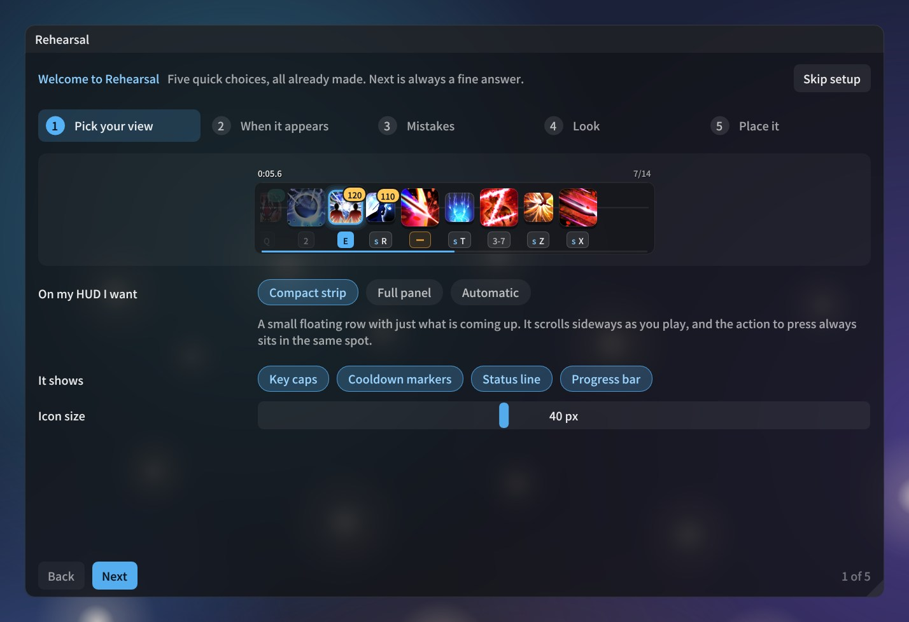
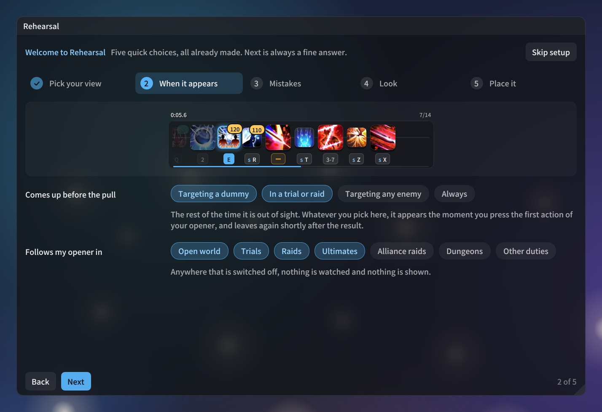
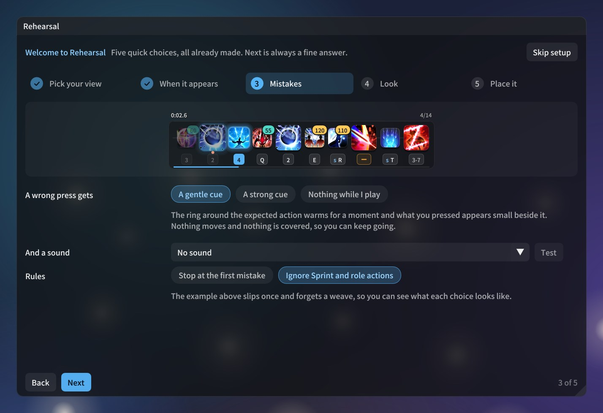
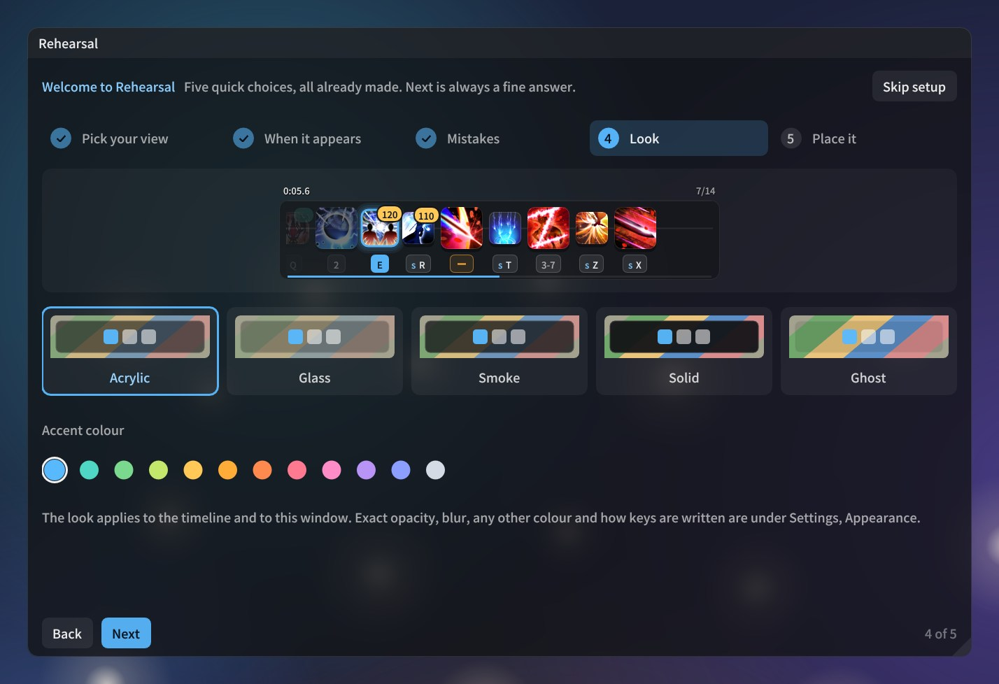
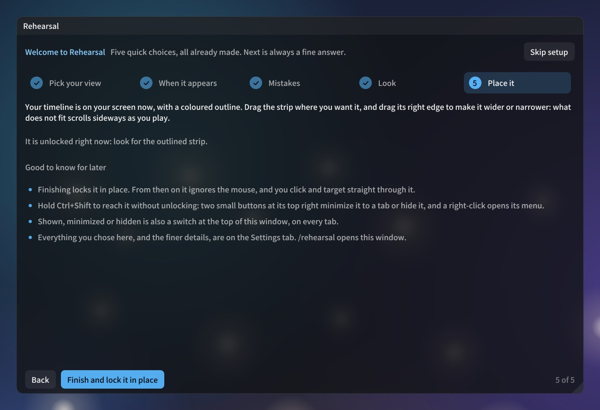
Nothing here is final. Everything is on the Settings tab afterwards, and /rehearsal setup runs the five steps again from what you have.
What it does
Shows what to press, and with which key
The next action is ringed and always sits in the same spot; what you have done slides away to the left. Under each action is the key it is bound to on your own hotbars, read live from your keybinds. An amber dash means the action is not on any hotbar yet.
One minute cooldowns carry a teal badge, two minute cooldowns a gold one, each with its real recast.
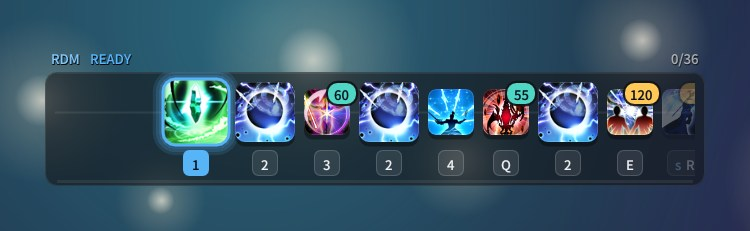
Notes a mistake without stopping you
A wrong press warms the ring and shows what you hit, small, beside the step. A skipped weave is marked and the timeline jumps ahead with you instead of getting stuck. Afterwards the Results tab has every attempt, step by step.
Sprint and role actions that are not part of the opener never count against you.
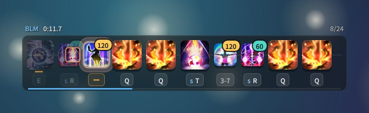
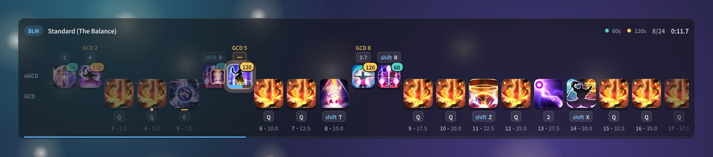
Gets out of the way
Locked, it is click-through like the rest of your HUD. Hold Ctrl+Shift and two small buttons appear: one minimizes it to a tab that shows where the run stands, the other hides it. A click on the tab brings it back.
The same shown, minimized or hidden switch sits at the top of the plugin window, so a hidden timeline is never lost.
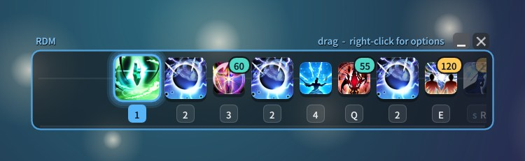
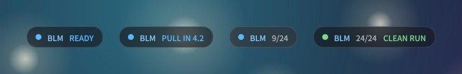
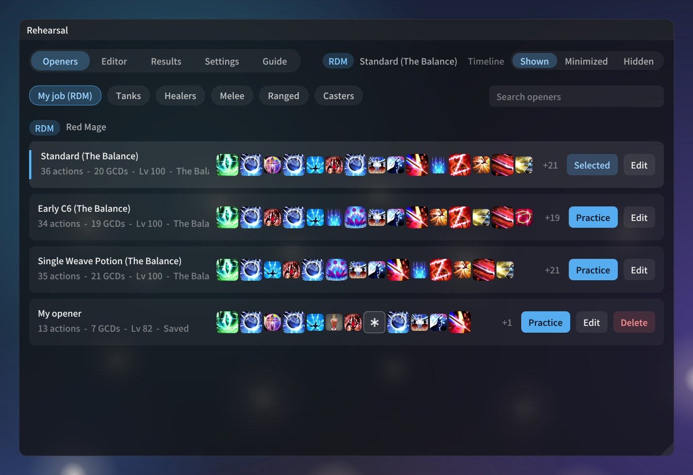
More of it

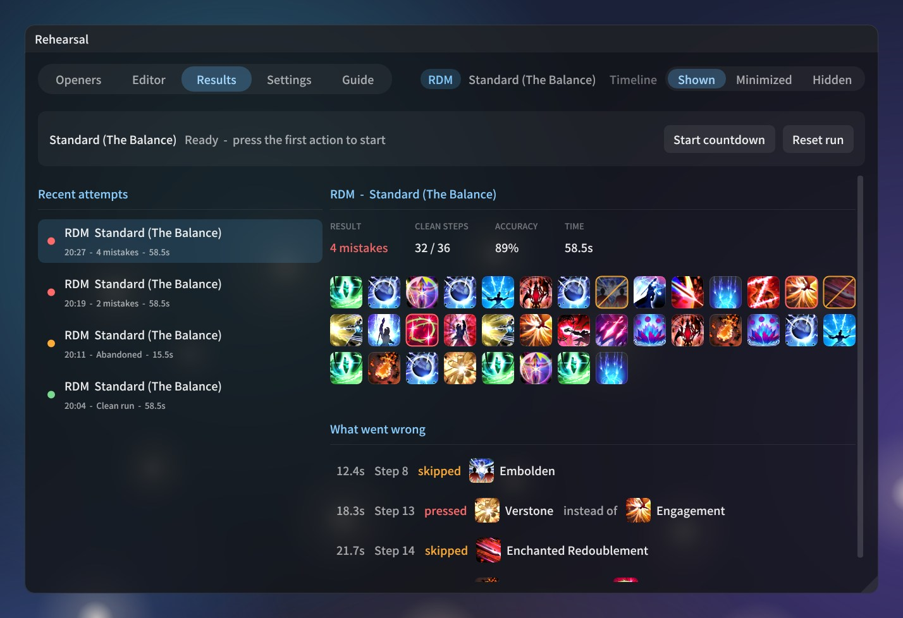

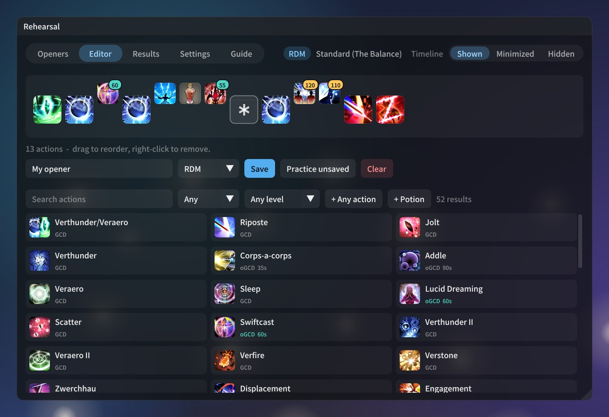

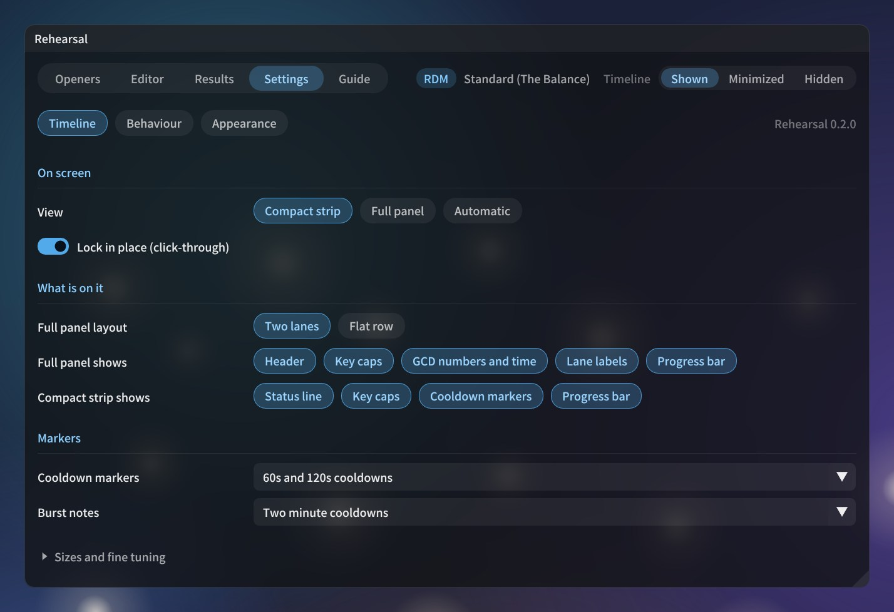

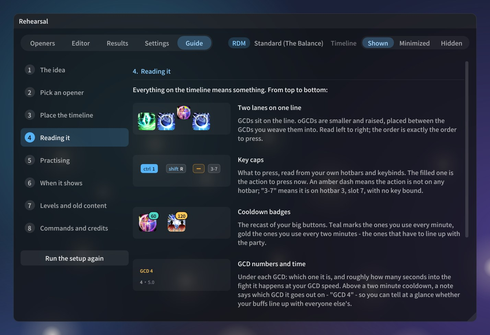
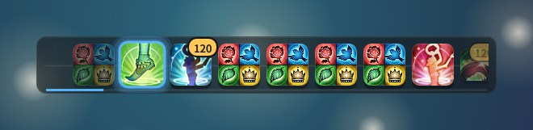
Out of the box
- The small strip, with key caps, cooldown badges and a status line.
- Locked: it ignores the mouse until you unlock it.
- There when you are about to pull: at a striking dummy, inside trials and raids, and the moment you press the first action.
- Quiet: a gentle cue on a wrong press, no sound, nothing highlighted on your hotbars.
- Follows the open world, trials, raids and ultimates; dungeons and alliance raids are off.
- Fitted to your level when you are below what an opener needs.
All of it can be changed: three settings pages, with the set-once sliders folded away.
Commands
None are needed; they are handy in macros.
| /rehearsal | Open the plugin window |
|---|---|
| /rehearsal setup | Run the first-run setup again |
| /rehearsal show min hide | Show the timeline, minimize it to a tab, or hide it |
| /rehearsal unlock lock | Free the timeline to move it, or pin it |
| /rehearsal view compact full auto | Switch views |
| /rehearsal cd | Start a private practice countdown |
| /rehearsal reset | Abandon the current attempt |
/opener works as a shorter /rehearsal when no other plugin uses it.
Questions
Does it press anything for me?
No. It draws a timeline and watches which of your own actions go off. It never uses an action, never sends chat or commands, and makes no network connections. It is a practice aid, not a rotation helper.
Is it allowed?
Like every Dalamud plugin it is a third-party tool, and the game's terms of service do not permit those. Rehearsal only draws on your own screen and changes nothing about the game or anyone else's experience. Use your own judgement, and do not talk about plugins in game.
Where do the openers and the numbers come from?
The bundled sequences are The Balance's, transcribed by hand and inherited from OpenerCreator. Times and GCD numbers are worked out from the game's own data and your current GCD speed, assuming the GCD keeps rolling: a plan, not a simulation.
Does it work with a controller?
Yes. In gamepad mode the key caps show cross hotbar positions instead of keys, with either LT/RT or L2/R2 labels.
I am level synced, or still levelling. Does it still help?
Yes. Actions you have not learned are left out and upgraded ones fall back to the version you have. It is an approximation; for content you care about, save the opener you actually want for that level, and it is remembered for that level cap.
How do I move it after the setup?
/rehearsal unlock, or the Lock switch under Settings. It gets a coloured outline; drag it, then lock it again.
I use OpenerCreator. Do they clash?
No. They have their own names, commands and settings and can be installed side by side. Rehearsal reads your saved OpenerCreator openers once and leaves them untouched.